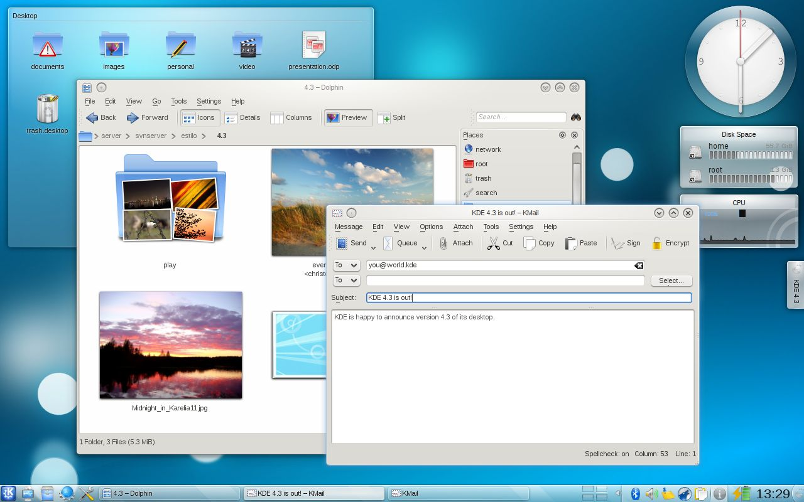
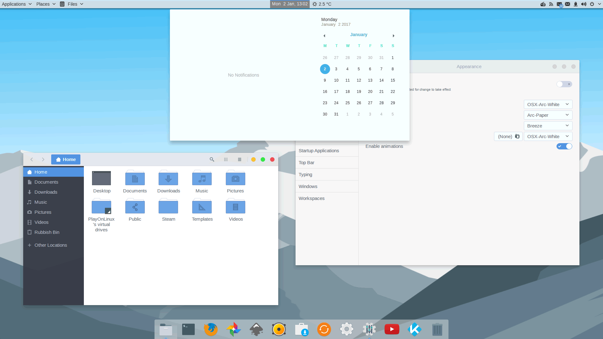
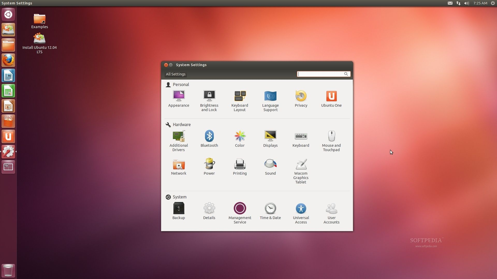
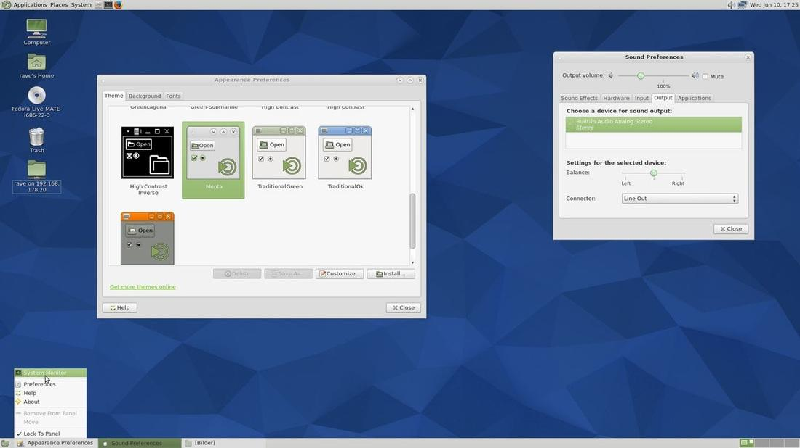
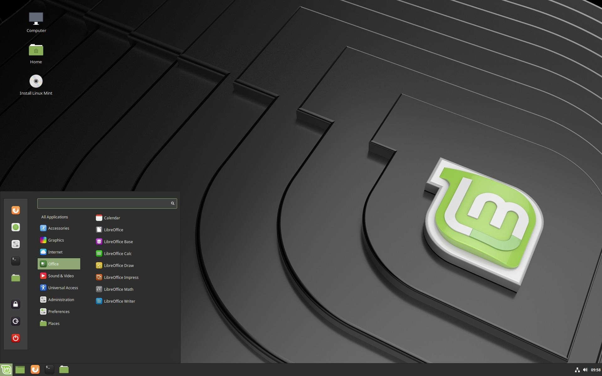
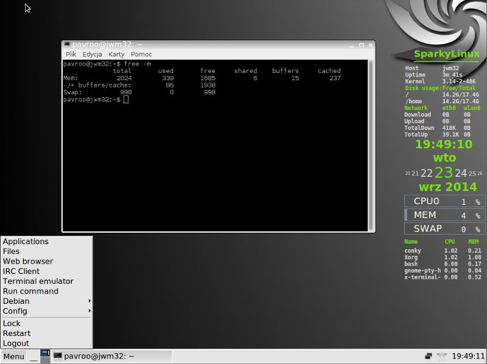

Linux桌面环境（桌面系统）大比拼[附带优缺点]
早期的 Linux 系统都是不带界面的，只能通过命令来管理，比如运行程序、编辑文档、删除文件等。所以，要想熟练使用 Linux，就必须记忆很多命令。
后来随着 Windows 的普及，计算机界面变得越来越漂亮，点点鼠标就能完成很多工作，人们已经习惯了图形界面化的操作，很难再忍受一片漆黑的命令行窗口了。这推动了 Linux 社区进行变革，很快推出了 Linux 系统的图形界面环境。
完成工作的方式不止一种，Linux 一直以来都以此而闻名，在图形桌面上更是如此，Linux 有各种各样的图形化桌面可供选择。
Linux 中的桌面环境也是一个程序，它和内核不是绑定的，两者的开发也不是同步的；给不带界面的 Linux 系统安装上一个桌面环境，你就能看到各种漂亮的窗口，并能用鼠标点击它们了。
上节讲到的各种 Linux 发行版其实已经附带了某种桌面环境，如果你喜欢折腾，也可以更换其它桌面环境。
个人电脑一般都会安装上桌面环境，这样操作更加便捷；Linux 服务器为了节省资源，一般都不会安装桌面环境。
下面给大家介绍几款比较流行的桌面环境。
KDE 是基于大名鼎鼎的 Qt 的，最初于 1996 年作为开源项目公布，并在 1998 年发布了第一个版本，现在 KDE 几乎是排名第一的桌面环境了。
许多流行的 Linux 发行版都提供了 KDE 桌面环境，比如 Ubuntu、Linux Mint、OpenSUSE、Fedora、Kubuntu、PC Linux OS 等。
KDE 和 Windows 比较类似，各位初学者相信都是 Windows 的用户，所以切换到 KDE 也不会有太大的障碍。
KDE 允许你把应用程序图标和文件图标放置在桌面的特定位置上。单击应用程序图标，Linux 系统就会运行该应用程序。单击文件图标，KDE 桌面就会确定使用哪种应用程序来处理该文件。
KDE 是所有桌面环境中最容易定制的。在其他桌面环境中，你需要几个插件、窗口组件和调整工具才可以定制环境，KDE 将所有工具和窗口组件都塞入到系统设置中。借助先进的设置管理器，可以控制一切，不需要任何第三方工具，就可以根据用户的喜好和要求来美化及调整桌面。
KDE 项目组还还发了大量的可运行在 KDE 环境中的应用程序，包括 Dolphin（文件管理工具）、Konsole（终端）、Kate（文本编辑工具）、Gwenview（图片查看工具）、Okular（文档及PDF查看工具）、Digikam（照片编辑和整理工具）、KMail（电子邮件客户软件）、Quassel（IRC客户软件）、K3b（DVD刻录程序）、Krunner（启动器）等，它们都是默认安装的。
对 KDE 优缺点的总结：
GNOME 于 1999 年首次发布，现已成为许多Linux发行版默认的桌面环境（不过用得最多的是 Red Hat Linux）。
GNOME 的特点是简洁、运行速度快，但是没有太多的定制选项，用户需要安装第三方工具来实现。
GNOME 甚至不包括一些简单的调整选项，比如更改主题、更改字体等，就这两种基本的调整而言，用户都需要安装第三方工具。所以，GONME 适合那些不需要高度定制界面的用户。
GNOME 被用作 Fedora 中的默认桌面环境，提供在几款流行的 Linux 发行版中，比如 Ubuntu、Debian、OpenSUSE 等。
2011 年，GNOME 3 进行了重大更新，不再采用传统的 Windows 风格的界面，而是进行了全新的设计，惊艳了很多用户。GNOME 3 的这种行为也导致部分用户和开发人员不满，他们又开发了多款其他的桌面环境，比如 MATE 和 Cinnamon。
对 GNOME 优缺点的总结：
2010 年，Unity 第一个版本发布，此后经过数次改进，如今和其它的桌面环境一样，也可以安装到其它的 Linux 发行版上了。
Unity 使用了不同的界面风格，如果你用的是 Ubuntu Linux 发行版，你会注意到 Unity 与 KDE 和 GNOME 桌面环境有些不一样。
Unity 在左边有一个启动器，位于启动器顶部的是搜索图标，又叫“Dash”。在 Dash 上搜索文件时，不仅会给出来自硬盘的搜索结果，还会给出来自在线来源的搜索结果，比如 Google Drive、Facebook、Picasa、Flick 及其他。
Unity 还提供了隐藏启动器、触摸侧边栏就显示的选项，用户还可以调高/调低显示启动器菜单的灵敏度。
Unity 很简单、运行速度快，但 Unity 在系统设置下却没有定制桌面的太多选项，要想安装主题或者定制另外不同的选项，比如系统菜单是否应该总是可见，或者“从启动器图标一次点击最小化”，用户需要安装第三方工具。
MATE 是一种从现在无人维护的 GNOME 2 代码库派生出来的桌面环境。
MATE 让人觉得在使用旧的桌面环境，但是结合了历年来界面方面的诸多改进。MATE 还非常适用于低配计算机，所以如果你有一台旧的或速度较慢的计算机，可以使用 MATE。
MATE 还是许多流行的 Linux 发行版随带的，比如 Ubuntu、Linux Mint、Mageia、Debian 及另外更多发行版。Ubuntu MATE 头一回是官方版本。
“欢迎首次发布的 Ubuntu MATE 官方版本。现在，用户将更容易更新软件，因为所有组件现在都在 Ubuntu 软件库中。”
MATE 自带的应用程序包括 Caja（文件管理工具）、Pluma（文本编辑工具）、Atril（文档查看工具）、Eye of MATE（图像查看工具）等，如果用户不需要其他功能完备的桌面环境的所有额外功能，那么 MATE 对他们来说是一款简单的轻量级桌面环境。
对 META 优缺点的总结：
Cinnamon 拥有 GNOME 和 Unity 等其它桌面环境所没有的种种功能。Cinnamon 是高度可定制的桌面环境，不需要任何外部插件、窗口组件和调整工具来定制桌面。Cinnamon 甚至可以通过设置管理器本身来下载并安装主题，甚至不需要打开互联网浏览器。
由于种种出色的所需功能，Cinnamon 对任何刚接触 Linux 的新用户来说都非常方便。许多用户放弃使用 Linux，是因为他们并不了解 Linux 的工作方式，但是我强烈建议新手应从 Cinnamon 桌面环境开始入手。
许多流行的 Linux 发行版提供了各自版本的 Cinnamon，比如 Ubuntu、Fedora、OpenSUSE、Gentoo、Arch Linux 等。Cinnamon 还是 Linux Mint 的默认桌面环境。
对 Cinnamon 优缺点的总结：
然而随着 KDE 和 GNOME 桌面环境的普及，情况发生了变化。运行 KDE 或 GNOME 桌面要占用的内存资源和较新的 Windows 桌面环境旗鼓相当。
如果你的 PC 已经有些年代了，也不要泄气。Linux 开发人员已经联手让 Linux 返璞归真。他们开发了一些低内存开销的图形化桌面应用，提供了能够在老旧 PC 上完美运行的基本功能。尽管这些图形化桌面环境并没有大量专为其设计的应用，但它们仍然能运行许多基本的图形化程序，支持如文字处理、电子表格、数据库、绘图以及多媒体等功能。
下表列出了一些可在配置较低的 PC 和笔记本电脑上运行的轻量级 Linux 图形化桌面环境。
以上这些图形化桌面环境并不如 KDE 或 GNOME 桌面一样绚丽，但却提供了恰到好处的基本图形化功能。
如果你用的是老旧 PC，尝试一下基于上述某个桌面环境的 Linux 发行版，看看怎么样，可能会有惊喜哦。
另外，你也可以查看
后来随着 Windows 的普及，计算机界面变得越来越漂亮，点点鼠标就能完成很多工作，人们已经习惯了图形界面化的操作，很难再忍受一片漆黑的命令行窗口了。这推动了 Linux 社区进行变革，很快推出了 Linux 系统的图形界面环境。
完成工作的方式不止一种，Linux 一直以来都以此而闻名，在图形桌面上更是如此，Linux 有各种各样的图形化桌面可供选择。
Linux 中的桌面环境也是一个程序，它和内核不是绑定的，两者的开发也不是同步的；给不带界面的 Linux 系统安装上一个桌面环境，你就能看到各种漂亮的窗口，并能用鼠标点击它们了。
上节讲到的各种 Linux 发行版其实已经附带了某种桌面环境，如果你喜欢折腾，也可以更换其它桌面环境。
个人电脑一般都会安装上桌面环境，这样操作更加便捷；Linux 服务器为了节省资源，一般都不会安装桌面环境。
下面给大家介绍几款比较流行的桌面环境。
1. KDE 桌面系统
KDE 是 K Desktop Environment 的缩写，中文译为“K桌面环境”。KDE 是基于大名鼎鼎的 Qt 的，最初于 1996 年作为开源项目公布，并在 1998 年发布了第一个版本，现在 KDE 几乎是排名第一的桌面环境了。
许多流行的 Linux 发行版都提供了 KDE 桌面环境，比如 Ubuntu、Linux Mint、OpenSUSE、Fedora、Kubuntu、PC Linux OS 等。
KDE 和 Windows 比较类似，各位初学者相信都是 Windows 的用户，所以切换到 KDE 也不会有太大的障碍。
KDE 允许你把应用程序图标和文件图标放置在桌面的特定位置上。单击应用程序图标，Linux 系统就会运行该应用程序。单击文件图标，KDE 桌面就会确定使用哪种应用程序来处理该文件。
KDE 是所有桌面环境中最容易定制的。在其他桌面环境中，你需要几个插件、窗口组件和调整工具才可以定制环境，KDE 将所有工具和窗口组件都塞入到系统设置中。借助先进的设置管理器，可以控制一切，不需要任何第三方工具，就可以根据用户的喜好和要求来美化及调整桌面。
KDE 项目组还还发了大量的可运行在 KDE 环境中的应用程序，包括 Dolphin（文件管理工具）、Konsole（终端）、Kate（文本编辑工具）、Gwenview（图片查看工具）、Okular（文档及PDF查看工具）、Digikam（照片编辑和整理工具）、KMail（电子邮件客户软件）、Quassel（IRC客户软件）、K3b（DVD刻录程序）、Krunner（启动器）等，它们都是默认安装的。
对 KDE 优缺点的总结：
- 优点：KDE 几乎是最先进最强大的桌面环境，它外观优美、高度可定制、兼容比较旧的硬件设备
- 缺点：Kmail 等一些组件的配置对新手来说过于复杂。

图1：KDE 桌面环境截图
图1：KDE 桌面环境截图
2. GNOME 桌面环境
GNOME 是 the GNU Network Object Model Environment 的缩写，中文译为“GNU网络对象模型环境”。GNOME 于 1999 年首次发布，现已成为许多Linux发行版默认的桌面环境（不过用得最多的是 Red Hat Linux）。
GNOME 的特点是简洁、运行速度快，但是没有太多的定制选项，用户需要安装第三方工具来实现。
GNOME 甚至不包括一些简单的调整选项，比如更改主题、更改字体等，就这两种基本的调整而言，用户都需要安装第三方工具。所以，GONME 适合那些不需要高度定制界面的用户。
GNOME 被用作 Fedora 中的默认桌面环境，提供在几款流行的 Linux 发行版中，比如 Ubuntu、Debian、OpenSUSE 等。
2011 年，GNOME 3 进行了重大更新，不再采用传统的 Windows 风格的界面，而是进行了全新的设计，惊艳了很多用户。GNOME 3 的这种行为也导致部分用户和开发人员不满，他们又开发了多款其他的桌面环境，比如 MATE 和 Cinnamon。
对 GNOME 优缺点的总结：
- 优点：简单易用，可通过插件来扩展功能。
- 缺点：对插件的管理能力比较差，也缺少其它桌面环境拥有的许多功能。

图2：GNOME 桌面环境截图
图2：GNOME 桌面环境截图
3. Unity
Unity 是由 Ubuntu 的母公司 Canonical 开发的一款外壳。之所以说它是外壳，是因为 Unity 运行在 GNOME 桌面环境之上，使用了所有 GNOME 的核心应用程序。2010 年，Unity 第一个版本发布，此后经过数次改进，如今和其它的桌面环境一样，也可以安装到其它的 Linux 发行版上了。
Unity 使用了不同的界面风格，如果你用的是 Ubuntu Linux 发行版，你会注意到 Unity 与 KDE 和 GNOME 桌面环境有些不一样。
Unity 在左边有一个启动器，位于启动器顶部的是搜索图标，又叫“Dash”。在 Dash 上搜索文件时，不仅会给出来自硬盘的搜索结果，还会给出来自在线来源的搜索结果，比如 Google Drive、Facebook、Picasa、Flick 及其他。
Unity 还提供了隐藏启动器、触摸侧边栏就显示的选项，用户还可以调高/调低显示启动器菜单的灵敏度。
Unity 很简单、运行速度快，但 Unity 在系统设置下却没有定制桌面的太多选项，要想安装主题或者定制另外不同的选项，比如系统菜单是否应该总是可见，或者“从启动器图标一次点击最小化”，用户需要安装第三方工具。
CCSM 和 Unity Tweak Tool 是面向 Unity 桌面环境的非常流行的定制工具。对 Unity 优缺点的总结：
- 优点：界面简洁直观，可以通过第三方工具来深度定制，而且使用了平视显示器（HUD）等新技术。
- 缺点：默认的定制功能比较差劲，通知机制一般。

图3：Unity桌面环境截图
图3：Unity桌面环境截图
4. MATE
上面我们提到，GNOME 3 进行了全新的界面设计，这招致一些用户的不满，他们推出了其它的桌面环境，MATE 就是其中之一。MATE 是一种从现在无人维护的 GNOME 2 代码库派生出来的桌面环境。
MATE 让人觉得在使用旧的桌面环境，但是结合了历年来界面方面的诸多改进。MATE 还非常适用于低配计算机，所以如果你有一台旧的或速度较慢的计算机，可以使用 MATE。
MATE 还是许多流行的 Linux 发行版随带的，比如 Ubuntu、Linux Mint、Mageia、Debian 及另外更多发行版。Ubuntu MATE 头一回是官方版本。
“欢迎首次发布的 Ubuntu MATE 官方版本。现在，用户将更容易更新软件，因为所有组件现在都在 Ubuntu 软件库中。”
MATE 自带的应用程序包括 Caja（文件管理工具）、Pluma（文本编辑工具）、Atril（文档查看工具）、Eye of MATE（图像查看工具）等，如果用户不需要其他功能完备的桌面环境的所有额外功能，那么 MATE 对他们来说是一款简单的轻量级桌面环境。
对 META 优缺点的总结：
- 优点：轻量级的桌面环境，能够兼容教旧的硬件设备。
- 缺点：我也不知道有什么明显的缺点，欢迎读者留言告知。

图4：MATE 桌面环境截图
图4：MATE 桌面环境截图
5. Cinnamon
与 MATE 类似，Cinnamon 是由 Linux Mint 团队因为不满 Gnome 3 的改进而开发的另一种桌面环境。但 Cinnamon 与 MATE 不同之处在于，Cinnamon 建立在 Gnome 3 的基础上。Cinnamon 是新的，而且在积极开发之中，但这款出色的桌面环境没有因新颖而在功能方面有所减弱。Cinnamon 拥有 GNOME 和 Unity 等其它桌面环境所没有的种种功能。Cinnamon 是高度可定制的桌面环境，不需要任何外部插件、窗口组件和调整工具来定制桌面。Cinnamon 甚至可以通过设置管理器本身来下载并安装主题，甚至不需要打开互联网浏览器。
由于种种出色的所需功能，Cinnamon 对任何刚接触 Linux 的新用户来说都非常方便。许多用户放弃使用 Linux，是因为他们并不了解 Linux 的工作方式，但是我强烈建议新手应从 Cinnamon 桌面环境开始入手。
许多流行的 Linux 发行版提供了各自版本的 Cinnamon，比如 Ubuntu、Fedora、OpenSUSE、Gentoo、Arch Linux 等。Cinnamon 还是 Linux Mint 的默认桌面环境。

图5：Cinnamon 桌面环境截图
图5：Cinnamon 桌面环境截图
对 Cinnamon 优缺点的总结：
- 优点：成熟完美，高度可性质，适合 Linux 新手。
- 缺点：有时候可能会有软件错误。
6. 适用于较老硬件设备的 Linux 桌面环境
图形化桌面环境的弊端在于它们要占用相当一部分的系统资源来保证正常运行。在 Linux 发展之初，Linux 的标志和卖点之一就是它可以运行在处理能力较弱的老旧 PC 上，这些 PC 无力运行较新的 Windows 桌面。然而随着 KDE 和 GNOME 桌面环境的普及，情况发生了变化。运行 KDE 或 GNOME 桌面要占用的内存资源和较新的 Windows 桌面环境旗鼓相当。
如果你的 PC 已经有些年代了，也不要泄气。Linux 开发人员已经联手让 Linux 返璞归真。他们开发了一些低内存开销的图形化桌面应用，提供了能够在老旧 PC 上完美运行的基本功能。尽管这些图形化桌面环境并没有大量专为其设计的应用，但它们仍然能运行许多基本的图形化程序，支持如文字处理、电子表格、数据库、绘图以及多媒体等功能。
下表列出了一些可在配置较低的 PC 和笔记本电脑上运行的轻量级 Linux 图形化桌面环境。
| 桌面环境 | 说明 |
|---|---|
| Fluxbox | 一个没有面板的轻型桌面，仅有一个可用来启动程序的弹出式菜单。 |
| Xfce | 和 KDE 很像的一个桌面，但少了很多图像以适应低内存环境。 |
| JWM | Joe 的窗口管理器（Joe’s Window Manager），非常适用于低内存低硬盘空间环境的超轻型桌面。 |
| Fvwm | 支持如虚拟桌面和面板等高级桌面功能，但能够在低内存环境中运行。 |
| fvwm95 | 从 fvwm 衍生而来，但看起来更像是 Windows 95 桌面。 |
以上这些图形化桌面环境并不如 KDE 或 GNOME 桌面一样绚丽，但却提供了恰到好处的基本图形化功能。
如果你用的是老旧 PC，尝试一下基于上述某个桌面环境的 Linux 发行版，看看怎么样，可能会有惊喜哦。

图6：JWM 桌面环境截图
图6：JWM 桌面环境截图
查看桌面环境
我们可以通过环境变量 DESKTOP_SESSION 来查看当前 Linux 发行版使用了哪种桌面环境，例如：
[c.biancheng.net]$ echo $DESKTOP_SESSION
gnome-classic
另外，你也可以查看
/etc下有没有对应的目录，例如 gnome 目录或者 kde 目录，如果有的话，就说明已经安装了。关注公众号「站长严长生」，在手机上阅读所有教程，随时随地都能学习。内含一款搜索神器，免费下载全网书籍和视频。

微信扫码关注公众号